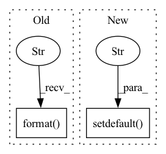

Pattern ID :5928
Before Change
elif launcher == "slurm":
_init_dist_slurm(backend, **kwargs)
else:
raise TypeError("unsupported launcher: "{}"".format( launcher) )
def is_distributed():After Change
"scontrol show hostname {} | head -n1".format(node_list))
os.environ.setdefault("MASTER_ADDR", master_addr)
os.environ.setdefault( "MASTER_PORT", "29500" )
os.environ["WORLD_SIZE"] = os.environ["SLURM_NTASKS"]
os.environ["RANK"] = os.environ["SLURM_PROCID"]
os.environ["LOCAL_RANK"] = os.environ["SLURM_LOCALID"]In pattern: SUPERPATTERN
Frequency: 3
Non-data size: 2
Instances Fragment ID: 20848826
Project Name: yeliudev/nncore
Commit Name: bd9472949e3bdb0e7a2c42afeb2e031d8f2f577f
Time: 2021-11-23
Author: yeliudev@outlook.com
File Name: nncore/engine/comm.py
M Class Name: AnonimousClass
N Class Name: AnonimousClass
M Method Name: init_dist(2)
N Method Name: init_dist(2)
M Parent Class:
N Parent Class:
M File Name: nncore/engine/comm.py
N File Name: nncore/engine/comm.py
M Start Line: 88
M End Line: 95
N Start Line: 63
N End Line: 82
Before Change
proc_id = int(os.environ["SLURM_PROCID"])
ntasks = os.environ["SLURM_NTASKS"]
node_list = os.environ["SLURM_NODELIST"]
addr = getoutput("scontrol show hostname {} | head -n1".format( node_list) )
os.environ["MASTER_ADDR"] = addr
os.environ["MASTER_PORT"] = str(port)
os.environ["WORLD_SIZE"] = ntasksAfter Change
master_addr = getoutput(f"scontrol show hostname {nodes} | head -n1")
os.environ.setdefault("MASTER_ADDR", master_addr)
os.environ.setdefault( "MASTER_PORT", "29500" )
os.environ["WORLD_SIZE"] = os.environ["SLURM_NTASKS"]
os.environ["RANK"] = os.environ["SLURM_PROCID"]
os.environ["LOCAL_RANK"] = os.environ["SLURM_LOCALID"] Fragment ID: 20848824
Project Name: yeliudev/nncore
Commit Name: 62f23364224776da2767473b51e937f1f6701a5d
Time: 2021-07-13
Author: 22849092+yeliudev@users.noreply.github.com
File Name: nncore/engine/comm.py
M Class Name: AnonimousClass
N Class Name: AnonimousClass
M Method Name: _init_dist_slurm(1)
N Method Name: _init_dist_slurm(2)
M Parent Class:
N Parent Class:
M File Name: nncore/engine/comm.py
N File Name: nncore/engine/comm.py
M Start Line: 22
M End Line: 31
N Start Line: 23
N End Line: 38
Before Change
if self.with_activation:
// TODO: introduce `act_cfg` and supports more activation layers
if self.activation not in ["relu"]:
raise ValueError("{} is currently not supported.".format(
self.activation) )
if self.activation == "relu":
self.activate = nn.ReLU(inplace=inplace)
After Change
if act_cfg_["type"] not in [
"Tanh", "PReLU", "Sigmoid", "HSigmoid", "Swish"
]:
act_cfg_.setdefault("inplace" , inplace)
self.activate = build_activation_layer(act_cfg_)
// Use msra init by default
self.init_weights() Fragment ID: 20848821
Project Name: alibaba/easycv
Commit Name: 4c1b3145e69f7d520374bd06a1ab143f7a075b42
Time: 2022-05-31
Author: 30484308+Cathy0908@users.noreply.github.com
File Name: easycv/models/utils/conv_module.py
M Class Name: ConvModule
N Class Name: ConvModule
M Method Name: __init__(14)
N Method Name: __init__(14)
M Parent Class: nn.Module
N Parent Class: nn.Module
M File Name: easycv/models/utils/conv_module.py
N File Name: easycv/models/utils/conv_module.py
M Start Line: 86
M End Line: 144
N Start Line: 137
N End Line: 143